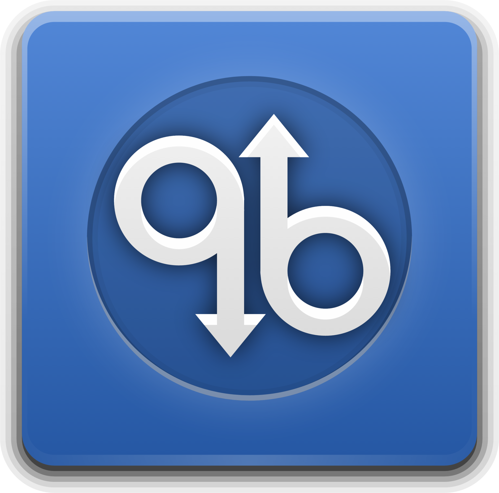
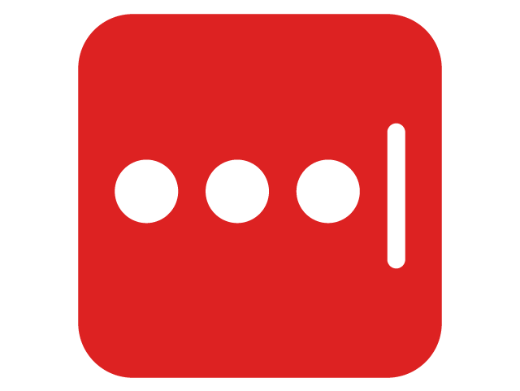

Basics
An ad blocker uBlock Origin(here)
VPN if torrenting , you will need to bind your vpn to your torrent
IDM if downloading large games (here)
Bittorrent (qBittorrent)(here)
Windows Defender exclusion folder
WinRaR (here)
(here)
Virus Protection
Malwarebytes(here)
Data Protection
HaveIBeenPwned(here)
Gaming
FitGirl Repacks (here) torrent and VPN needed
SteamRip (here) use IDM
Retro
Vims Lair (here)
(here)
Emulation
Retro arch  (here)
(here)
Tweaks Using PowerShell
Paste this↓ into cmd/powershell
iwr -useb https://christitus.com/win | iex
Choose the tweaks you'd like to perform
Minecraft Server
 (here)
Just copy and paste IP into MC server list
(here)
Just copy and paste IP into MC server list
Password Manager
LastPass(here)
Offline Password Manager
KeePass(here)
 (here)
(here) (here)
(here) (here)
(here)